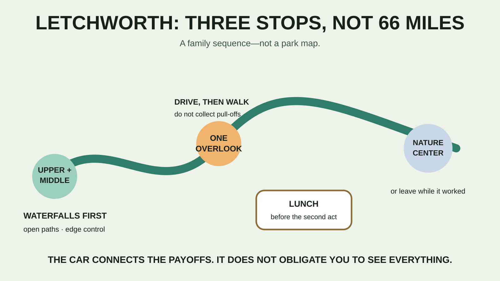

WESTERN NEW YORK · BIG-PARK FAMILY DAY
Letchworth State Park With Kids: The Overlook-First Day That Skips the Marathon
Letchworth is too large to improvise well. Use the car to connect three high-payoff stops, walk only where the family still has good judgment, and leave the 66-mile trail network alone.

Who this plan fits—and who should skip it
Good fit: school-age kids who like large scenery but do not need a long hike to feel accomplished, and adults willing to use short walks plus car repositioning. Simplify or skip: families expecting a stroller-continuous waterfall route, anyone who cannot safely manage uneven paths or gorge-side drop-offs without checking exact access first, children who run from adults near edges, or a group that hates another two-plus hours in the car after a long morning.
This is a different question from the site's Watkins Glen stair plan and Taughannock gorge walk. Letchworth's advantage is scale and variety. Its cost is the distance between useful stops.
Current facts to check before leaving
- Main contact and address: New York State Parks lists 1 Letchworth State Park, Castile, NY 14427 and 585-493-3600. Do not put only the park name into navigation and assume it will choose the right entrance.
- Drive: budget roughly 2 hours 15 minutes to 2 hours 45 minutes from the Syracuse area to the southern side, depending on your start, route, construction and stops. That is a planning range, not a promise; check live navigation when leaving.
- Park hours: open year-round, 6 a.m.–11 p.m. daily. Individual facilities and trails keep their own seasons and hours.
- Vehicle fee: the official 2026 listing is $10 per vehicle, collected daily from 9 a.m.–5 p.m. May 8 through October 18. Pool and museum entry are included. Verify before travel.
- Nature center: Humphrey Nature Center is listed open daily, 10 a.m.–5 p.m. The museum is listed 10 a.m.–5 p.m. May through October.
- Pool: the 2026 projected season is June 27 through Labor Day, daily 11 a.m.–6:45 p.m. Treat “projected” as a reason to confirm same-day operation.
- Known trail closure: Trail 7 from Middle Falls to the Genesee Arch Bridge is permanently closed. A barrier is information, not a puzzle.
- Reservations: ordinary day use does not list a reservation requirement. Camping and cabins require reservations; some 2026 campground availability is reduced by construction.
Choose the entrance before the kids are in the car
The official park page says the Portageville entrance provides access to the Glen Iris Inn, museum, Middle and Upper Falls, and the Genesee Arch Bridge. That makes it the cleanest first target for this itinerary. The Castile entrance is closest to the visitor center, Lower Falls area and Humphrey Nature Center. Save both entrance links or the official map before departure.
Do not route to the Mount Morris entrance for a waterfall-first day; the state describes that entrance as access to the pool and Highbanks area on the north end. Letchworth can turn one wrong pin into a long internal drive. Download the state's map or Parks Explorer map before cell service becomes part of the decision.
The overlook-first family itinerary
8:30 a.m. — Southern entrance and current conditions
Aim for an early arrival at the Portageville side. Confirm which waterfall parking areas, paths and restrooms are open. Photograph the posted map. Tell the kids the actual plan: two waterfall views, one overlook, lunch, then a vote on the nature center. A bounded promise is easier to keep than “we'll see the whole park.”
8:45 a.m. — Upper Falls and the bridge view
Start at the high-payoff southern area while attention is good. Use only open, maintained paths and established overlooks. The official closure means you should not plan to continue Trail 7 from Middle Falls to the bridge. The waterfall and bridge can be viewed without turning a closure into an unauthorized route.
9:30 a.m. — Middle Falls, then stop adding mileage
Move to Middle Falls using the current parking and path instructions. This is the first checkpoint: are feet controlled, are kids staying behind barriers, and does everyone still respond immediately to an adult? If not, view what is safely accessible and return to the car. A larger gorge does not make loose edges more forgiving.
10:30 a.m. — Drive to one named overlook
Choose one overlook shown on the current official map—Inspiration Point is the obvious southern-area candidate—rather than hopping through every pull-off. Park completely, unload deliberately, and keep children on the protected side of adults near drop-offs. Fog, wet leaves and crowds can change an easy viewpoint into a higher-control stop.
11:30 a.m. — Lunch before the optional block
Use an open designated picnic area or a planned food stop. The park lists food service, and Glen Iris Inn operates seasonally, but restaurant hours, reservations and waits should not control a hungry family. Bring a simple lunch in the car. The day-trip cooler guide covers safe packing without turning lunch into cargo.
12:30 p.m. — Nature center, accessible sensory trail, or exit
The Humphrey Nature Center gives the day an indoor reset and educational payoff; the state says its exhibits cover plants, animals, geology and river ecology. The park also describes the Autism Nature Trail as an accessible one-mile trail with eight sensory stations. “Accessible” is useful but not specific enough for every mobility, sensory or restroom need, so call the park about the exact route and facilities your family requires.
2:00 p.m. — One second act, maximum
If everyone is still regulated and the facility is verified open, choose the pool, a short nature-center trail, or one final overlook. Do not choose all three. The pool is on the north end and adds driving; it makes sense only if swimming was a real priority from the start. Otherwise, leave before a beautiful park becomes a late, exhausted ride home.
What to pack
- Closed-toe shoes with useful traction; dry socks and a simple change of clothes in the car.
- Water, lunch, quick snacks, required medication and compact first aid.
- Sun and insect protection plus a weather layer suited to the actual forecast.
- A charged phone with the official map saved offline, a charging cable and an adult-controlled backup light.
- Swim gear only if the pool is confirmed and important enough to justify the north-end drive.
- A trash bag and a small cleanup kit for the ride home.
The family daypack guide handles the walking load. If the day may run toward dusk, the new family lighting guide explains why the light lives in the pack before darkness arrives.
Food, restrooms, pets and accessibility
Use a restroom at the first confirmed facility and again before the longer drive between zones. Food, visitor facilities and restrooms are amenities, not guarantees at every overlook. Keep the picnic self-contained and verify seasonal operations.
The posted pet policy allows a maximum of two pets in permitted day-use areas unless signs or directives say otherwise. Pets must be supervised and crated or on a leash no longer than six feet; proof of rabies inoculation may be requested. Pets are not permitted in playgrounds, buildings, golf courses, boardwalks, pools, spray grounds or guarded beaches, except service animals as provided by the policy. A pet makes the nature-center-and-pool version of this day much harder.
For accessibility, the state directs visitors to call the park. Ask about the exact parking surface, grade, barriers, restroom, overlook and nature-center route you intend to use. “Scenic overlook” and “one-mile accessible trail” are not complete access specifications.
Weather, gorge safety and meltdown backups
Heavy rain or fog: skip exposed overlooks and use the nature center if open. Thunder: move to a substantial building or enclosed hard-topped vehicle; an overlook shelter and a tree are not safe lightning plans. Heat: shorten exposed walks, eat early and choose indoor exhibits over one more viewpoint. Child loses edge control: return to the car immediately. The scenery will still exist on another day.
Wrong entrance: do not compensate by rushing. Rebuild the route around the area you reached. Parking full: move to the next planned zone instead of blocking traffic or improvising on a shoulder. Nature center closed: picnic and leave. Pool unavailable: do not search for an unofficial swimming place; there is no safe substitute for a supervised, open facility.
The family day-trip system supplies the checkpoint logic, and the road-trip packing system keeps the park map, food and dry reset from disappearing under the luggage.
Official check-before-you-go sources
Operational details were checked August 27, 2026. Entrances, trails, facilities, fees, pool operation, parking and construction can change; verify on the day of travel.
- New York State Parks: Letchworth State Park
- New York State Parks: Letchworth maps and documents
- National Weather Service: lightning safety
MAKE THE WEEKEND COUNT
Useful beats heroic.
Build the day your family can finish well, then leave enough energy for the ride home.
More family plans